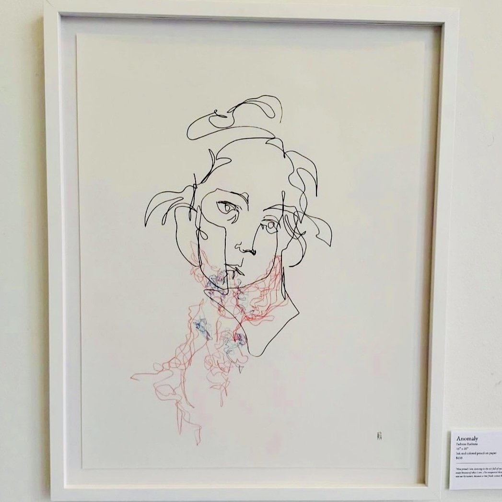
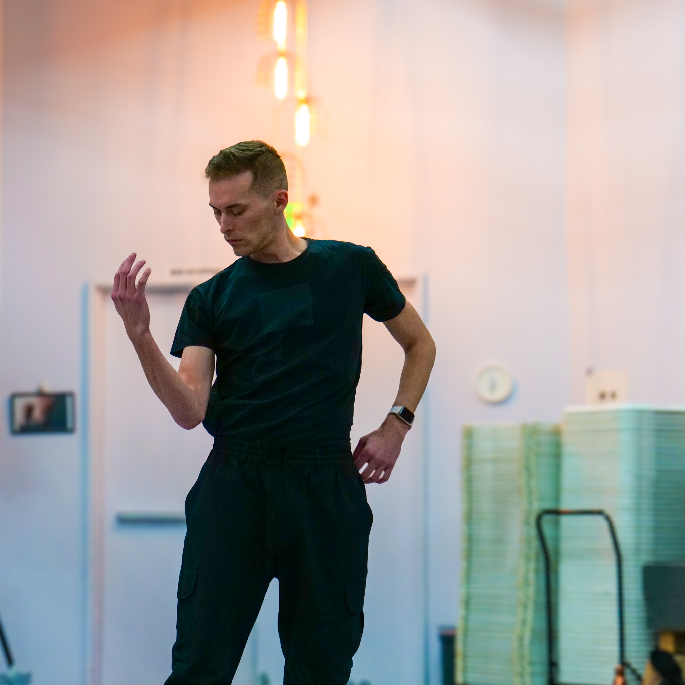
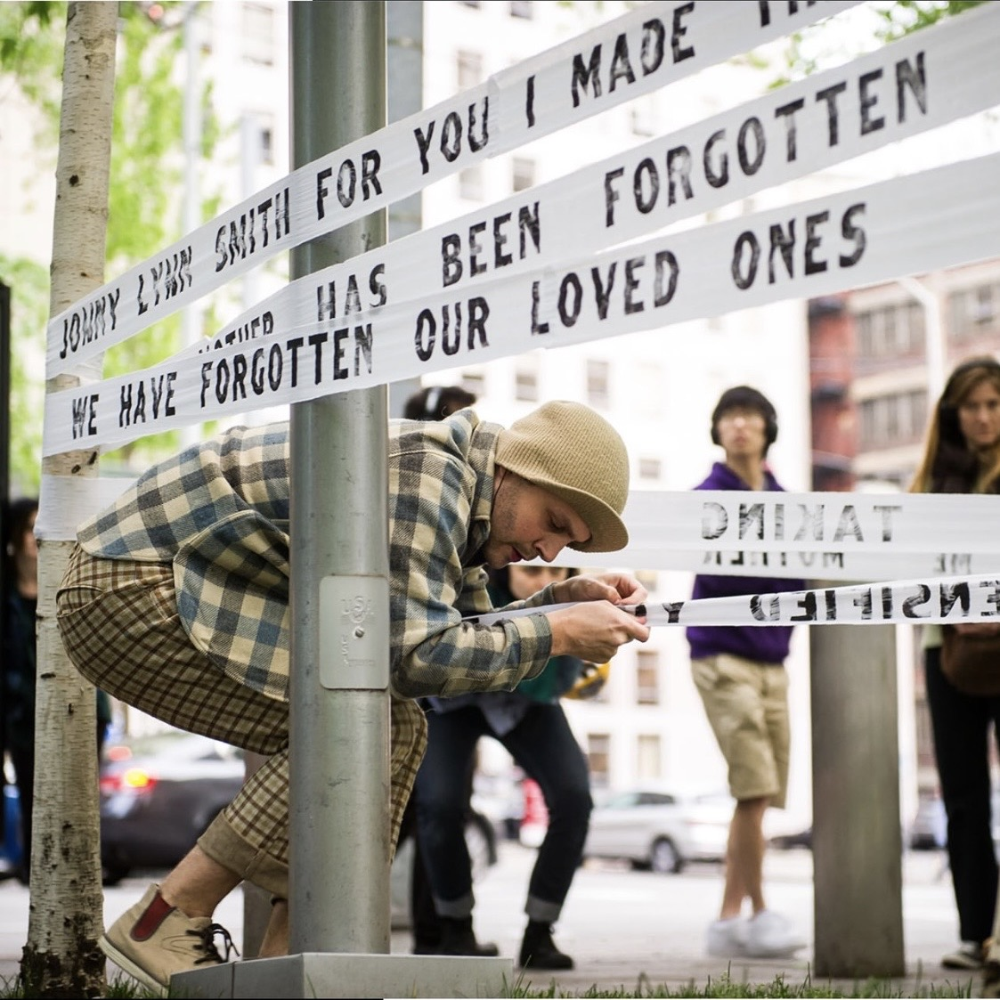
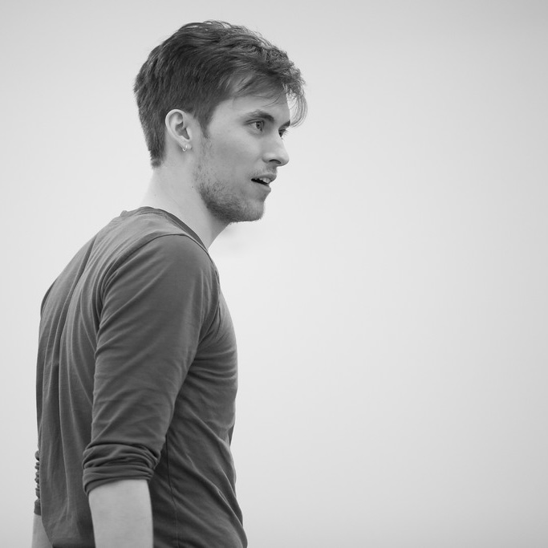
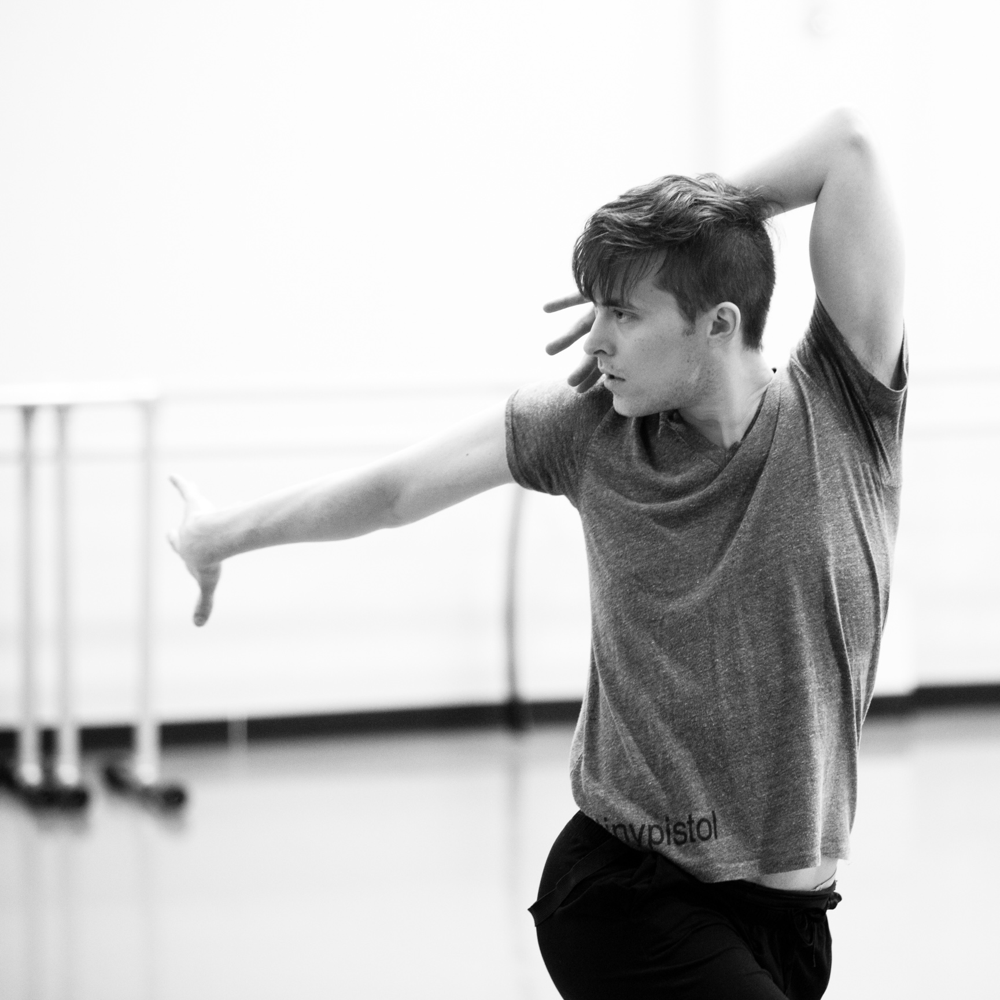
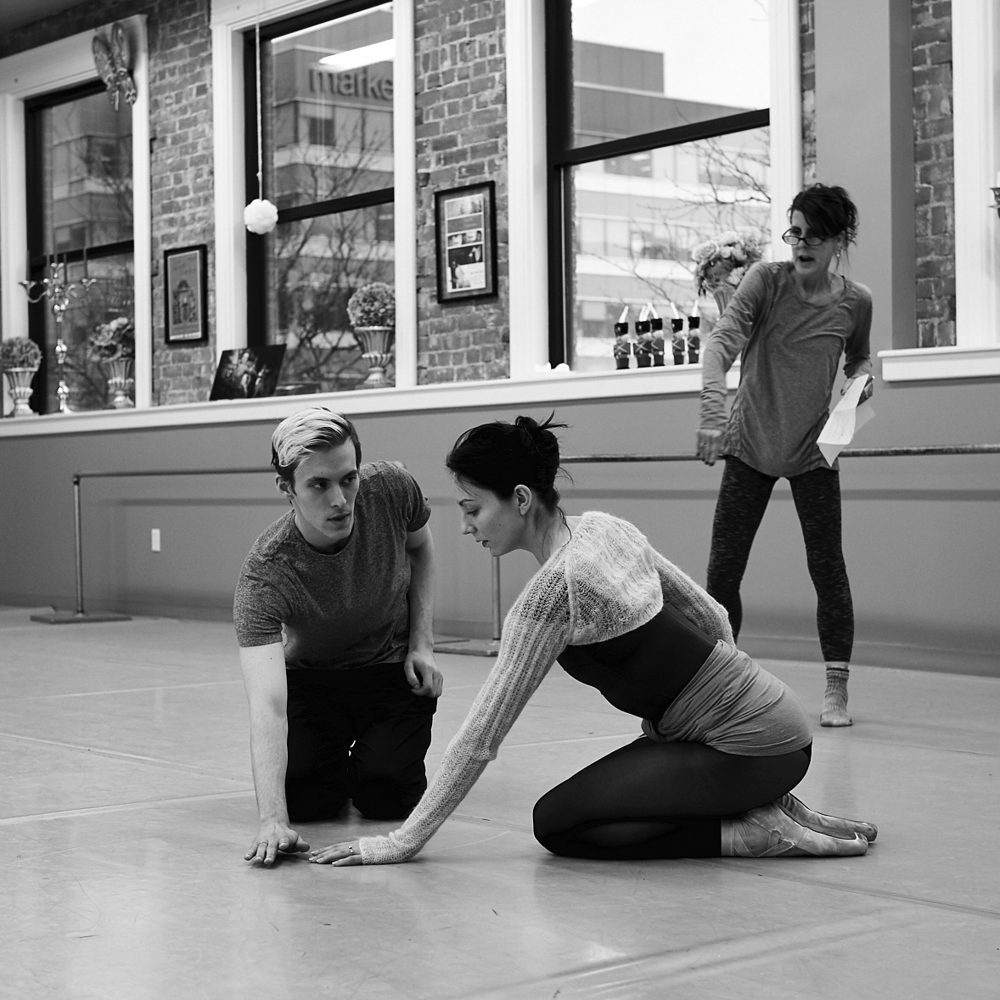
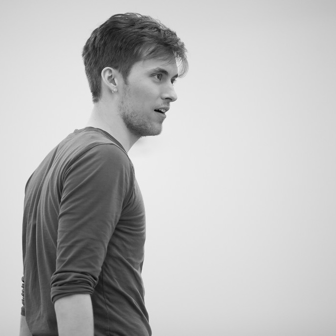
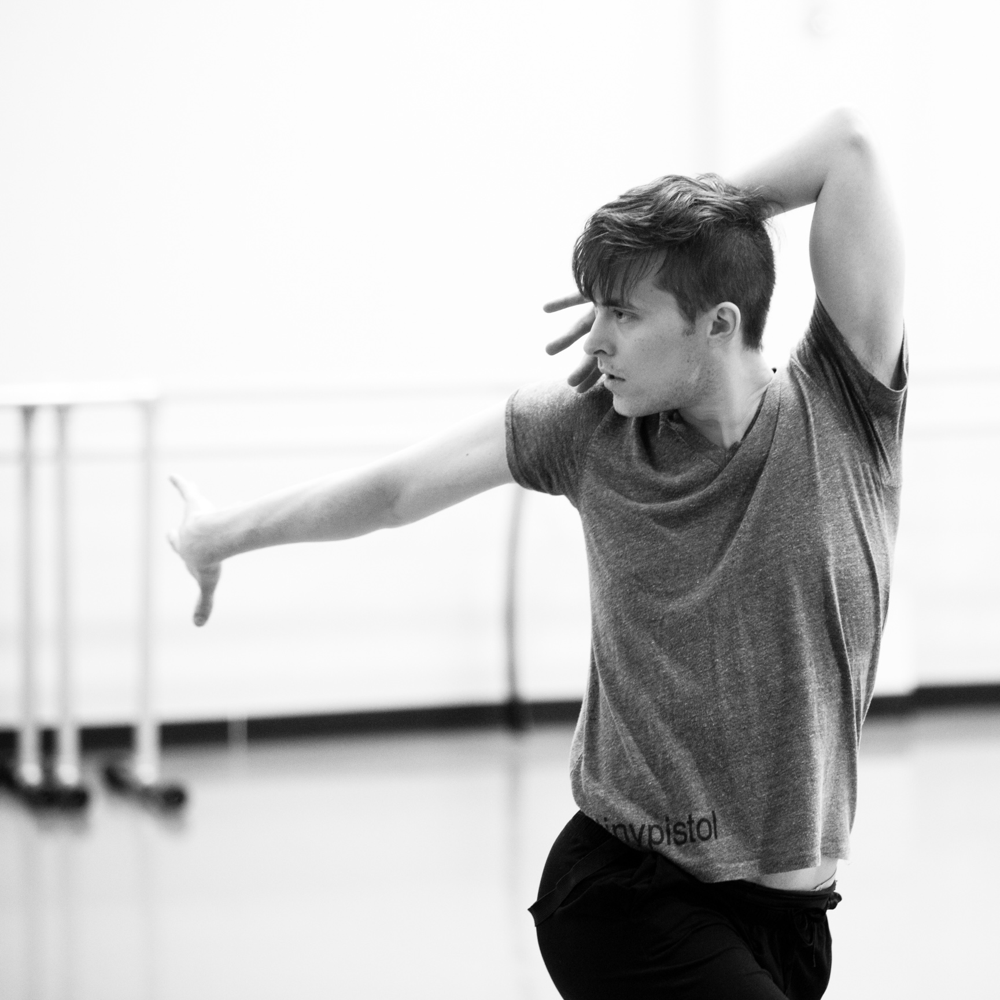
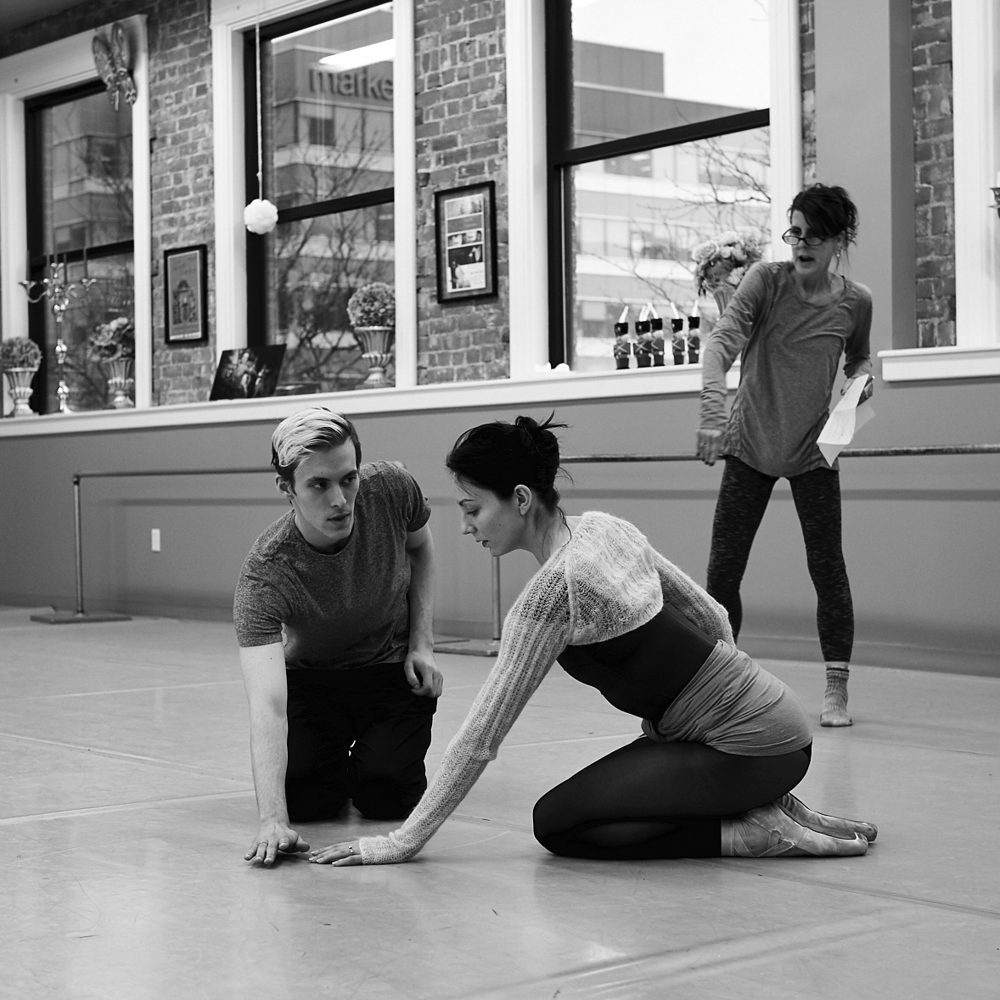

TBD (Fadness Radness Collaboration)
Artist Fadness Radness engaged dancers Kyrin Grey and Ezra Dickinson to model for a series of drawings inspired by characters in Norse Mythology, with Kyrin embodying Loki and his three children, Fenrir, Jörmungandr, and Hel, and Ezra embodying Odin, Thor, and Týr. As part of Fadness's upcoming show at Vermillion, Kyrin and Ezra will present a dance inspired by the tension in the relationships between Loki, his children, and the gods.
Concept and Visual Art: Fadness Radness
Choreography: Kyrin Grey and Ezra Dickinson
 




